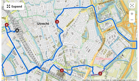

Routes with map
Langs de Vecht
Intermediate bike ride.
Fitness required.
Average time.
28.6 mi
Paved surfaces.
For all skill levels.
The starting point of the Tour is accessible with public transport.
Galgenwaardsepad
Easy bike ride.
Average time
9.95 mi.
Great for any fitness level.
Mostly paved surfaces.
Suitable for all skill levels.
The starting point of the Tour is accessible with public transport
